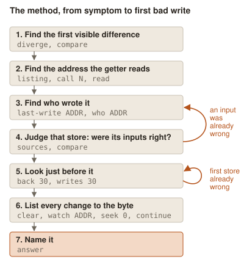

13 · The ladder
Six later builds of the game each misbehave in one way, five of Lob and one of Lob II, and each comes with a recording of a run that went wrong. By the end of this lesson you will have named, for each build, the first bad write, the earliest store in the run that leaves a byte of memory holding a value a correct build wouldn't hold there at the same point of the run (API.md defines it under "investigations/N.txt"). Each answer comes from a script of debugger commands that your own tool runs inside a replay budget.
This command lists the six builds, what is wrong at the end of each recording, and each budget:
node lab.mjs ladderStart
This lesson writes nothing new into your debugger. Before it, your project replays, steps backward, indexes a recording and names functions and lines, and project/investigations/1.txt to 6.txt are the stubs node lab.mjs start made, two comment lines each, so all six unit 13 checks fail with "not written yet". After it, each of those scripts runs through debug.mjs on your own files and names its build's first bad write inside the build's budget, and project/changes.mjs, the new application, lists every change to chosen bytes from the start of a run.
Your project must pass the checks of units 08 to 12 first, because every script runs on your machine, recorder, debugger, index and names. If one of them fails and you want to go on with this lesson, make a new project with node examples/start-chapter.mjs project13 supplied, then node examples/start-recorder.mjs project13 supplied, node examples/start-debugger.mjs project13 supplied, node examples/start-query.mjs project13 supplied and node examples/start-names.mjs project13 supplied, and use project13 wherever this lesson says project. The ladder's recordings are supplied, so it needs no recording of its own.
Code scope: walked through, the investigation of build 1, five listings of project/investigations/1.txt, 16 lines: 9 debugger commands and 7 lines of notes, each listing followed by what the script prints so far. The finished script is examples/investigation-1.txt, 28 lines including the two comment lines of the stub and its region markers, which are notes to debug.mjs. Supplied, and nothing to write: the six builds with their listings and recordings, and debug.mjs, whose commands run your files. Toured, in debug.mjs: diverge and compare, which run a build and its good build in Node's own engine; sources, which prints a chain's count and its newest stores; and writes, which lists what each instruction wrote. Your own work: builds 2 to 6, and changes.mjs.
Time: allow about 30 to 45 minutes to read and work through build 1, and many hours for builds 2 to 6, which rise in difficulty. These are planning estimates, not measured learner times.
There is no route command for this lesson. Your project already has investigations/1.txt; add each listing below at the end of it, in order. A supplied copy of the finished script is examples/investigation-1.txt; use it to compare, or copy it into a new project, never over your own script. The new application needs one file, which this command adds:
node examples/start-changes.mjs projectIt copies starter/changes.mjs to project/changes.mjs when your project has no changes.mjs, leaves an existing one as it is, and says which it did. It records no route. Run the first check with a description of where you started:
node lab.mjs check project 13 --help-used "lesson 13 start; investigation stubs"All six checks fail with not written yet while the scripts hold only notes. That is a baseline, not evidence of anything.
Each unit 13 check runs one script, investigations/N.txt for build N, through debug.mjs on your own files. It passes only when the script ends with an answer that names that build's first bad write, by its function, instruction, address and tick, and replays no more than the build's budget. A script whose answer names any other write fails.
What you have and what you don't
For each build you get its .wasm file (with function names), its listing in programs/ladder/, and its recording in recordings/ladder/. You don't get its C source, and its memory is laid out differently from lob.wasm. The game's state sits elsewhere and its fields are in another order. So you can't find the change by comparing memory with lob.wasm, and a listing compared line by line with lob.wasm's differs almost everywhere.
What you can compare is behaviour. lob.wasm is the last good build of Lob, and lob2.wasm is the last good build of Lob II, the good build for build 6. Their getters, r_px, r_result (the kind of landing) and the rest (getters prints them all), or g0 to g7 for Lob II, mean the same in every build of the same game. debug.mjs runs both builds on the recording's calls in Node's own engine:
divergenames the first call after which a getter of this build differs from the good build's (this isdebug.mjs'sdiverge, not the lab's from lesson 09)compareshows every getter of both builds side by side after the calls so far, and for a build of Lob each build's status line, message line and help text too.
Neither command uses your machine or counts towards the budget. They tell you where to look, and your debugger finds the write.
The method
Work backward from the first visible difference to the first bad write.

The two arrows that go back are steps 4 and 5 below, and each moves the candidate store earlier in the run.
- Find the first visible difference. Start from the build's symptom, or run
diverge. Note the call and the getter. - Find the address. A getter reads memory, so run it in your head from the listing, or stand between calls and
readthe bytes it reads. In Lob,r_pxreads the pointer at 78,112 and then the 4 bytes at an offset from it. In a ladder build the pointer's address and the offset can both differ (build 1's pointer is at 72,992), and the listing gives both. The address the pointer holds, where the state lives, also depends on the seed,game_init's first argument, even in the good build:lob.wasmkeeps its state at 65,888 in a game started with seed 4 and at 66,304 with seed 30. Read the pointer at the call you are investigating, in the run you are investigating. In mode 2 the game moves its state to a new address at every new round (API.md, "public/sessions.mjs"), so an address read in round 2 may hold something else in round 1. - Find who wrote it. Stand at the start of the call after the one where the getter first differs (
call 238after a difference in call 237). Therelast-write ADDR(your Debugger) orwho ADDR(your index) takes you to the last store to that byte. - Judge that store. Read its value and ask
sourceswhich stores, answers and arguments it was computed from. In a ladder build a chain can hold hundreds of stores, sosourcesprints their count and the newest 8, each with its tick, function and address, andsources Nshows the newest N. If one of its inputs was already wrong, that input's store is earlier on the chain, so go back to step 3 with it. If all its inputs hold the values a correct build would have, and its result is still wrong, the planted change acts here.
Question 13a: in some build, a store writes 0 over 0 at the first byte of the message line. Just before this store, at the same point of the run, the good build's message already reads HIT!, so its first byte holds H. Can that store be the first bad write? Answer yes or no, and commit:
node lab.mjs predict project 13a YOUR_ANSWER- Look just before it. The code that made one wrong store often made others a few instructions earlier, from the same wrong decision. Step back a little (
back 30) and list what the next instructions write (writes 30, which also moves the debugger 30 instructions forward, back where you stood). The earliest store in that stretch with a wrong value is your new candidate, even if it isn't the one your symptom led you to. If the stretch's first store is already wrong, step back further. - List every change. A wrong byte's last writer may not be the store that first made it wrong. Remove earlier stops with
clear, then setwatch ADDRon the byte,seek 0andcontinueagain and again. Each stop is right after a store that changed the byte, so the stops list every change to it from the start of the run. - Name it. Stand right after the first bad write (
last-write,whoand a watch's stop leave you there, and afterwrites,seekthe tick it printed for that store) and runanswer.
Judging a store needs a notion of right, which you can take from the help text (angle 5 to 85, power 10 to 100, land within 12 paces to score), what the good build shows through its getters on the same calls, and arithmetic you can redo from the listing. Lob II's getters don't say what they hold, so for build 6 your notion of right comes from compare against lob2.wasm and from the build's symptom in node lab.mjs ladder.
The store your symptom leads to may not be the first wrong one. Step 5 exists because a wrong decision usually makes several stores. The last writer of a wrong value isn't always the first bad write either. The same wrong store may have run earlier, and its earlier result may since have been overwritten, which step 6 shows. And a store can write a right value to the wrong address. Then every input sources lists is right, because the chain doesn't follow addresses, so look at how the address was computed.
A worked investigation: build 1
Build 1's symptom: the second shell lands 10 paces short of the flag and the message reads SHORT BY 10, although the help says a shell within 12 paces scores. lob.wasm shows HIT! on the same calls. Here is the investigation, built up in project/investigations/1.txt one step of the method at a time. After each step, run the script so far:
node debug.mjs project 1 project/investigations/1.txtdebug.mjs opens build 1's recording with your Debugger, then runs every command in the script from the top and prints each one's output. The script has no answer yet, so it only looks.
Find the first visible difference
Add these lines at the end of project/investigations/1.txt:
Add at the end of project/investigations/1.txt.
# The second shell lands 10 paces short; lob.wasm says HIT! on the same calls.
divergeRun the script:
node debug.mjs project 1 project/investigations/1.txtBuild 1: 241 calls, 265287 instructions. Type help for commands.
> diverge
after call 237 (game_tick): r_result is 2 here, 1 in lob.wasmCall 237 is the game frame in which the second shell lands, and r_result is the kind of landing: 1 a hit, 2 short. The first line is your Debugger opening the recording, a replay of all 265,287 instructions. diverge itself ran the two builds in Node's engine, not on your machine.
Find the address
Add:
Add at the end of project/investigations/1.txt.
# r_result reads the pointer at 72992, then 4 bytes at offset 0 from it.
listing r_result:0 4
call 238
read 72992 4 i32Run the script again:
node debug.mjs project 1 project/investigations/1.txtBuild 1: 241 calls, 265287 instructions. Type help for commands.
> diverge
after call 237 (game_tick): r_result is 2 here, 1 in lob.wasm
> listing r_result:0 4
function 18 (r_result)
> 0 i32.const 0
1 i32.load 2 72992
2 i32.load 2 0
3 end
> call 238
tick 262788, call 238 (game_tick), next: function 8 (game_tick), instruction 0: global.get 0
> read 72992 4 i32
65928The getter loads the pointer at 72,992 and reads 4 bytes at offset 0 from it. call 238 stands where call 238 begins, between calls, after call 237 has finished. Between calls the pointer holds 65,928, so the result lives at 65,928. This build keeps its state elsewhere than lob.wasm, so neither address would mean anything in another build.
Find who wrote it
Add:
Add at the end of project/investigations/1.txt.
# The pointer holds 65928, so the result lives there. Who wrote it?
last-write 65928Run the script again:
node debug.mjs project 1 project/investigations/1.txtBuild 1: 241 calls, 265287 instructions. Type help for commands.
> diverge
after call 237 (game_tick): r_result is 2 here, 1 in lob.wasm
> listing r_result:0 4
function 18 (r_result)
> 0 i32.const 0
1 i32.load 2 72992
2 i32.load 2 0
3 end
> call 238
tick 262788, call 238 (game_tick), next: function 8 (game_tick), instruction 0: global.get 0
> read 72992 4 i32
65928
> last-write 65928
tick 261685: function 8 (game_tick), instruction 304: i32.store 2 0 wrote 4 bytes at 65928tick 261685: function 8 (game_tick), instruction 304: i32.store is the landing code storing 2, short, into the result. last-write moved the debugger to that tick, right after the store.
Tour what debug.mjs supplies for judging
Step 4 judges this store: were its inputs right? Two supplied commands answer that. examples/ladder-tour.txt runs them on build 1 at the places this investigation has reached:
node debug.mjs project 1 examples/ladder-tour.txtBuild 1: 241 calls, 265287 instructions. Type help for commands.
> call 238
tick 262788, call 238 (game_tick), next: function 8 (game_tick), instruction 0: global.get 0
> compare
r_angle this build 45 lob.wasm 45
r_power this build 58 lob.wasm 58
r_cannon_x this build 80 lob.wasm 80
r_target_x this build 456.575927734375 lob.wasm 456.575927734375
r_flying this build 0 lob.wasm 0
r_px this build 446.37762451171875 lob.wasm 446.37762451171875
r_py this build 0.11890347301959991 lob.wasm 0.11890347301959991
r_impact_x this build 446.4408874511719 lob.wasm 446.4408874511719
r_impact_age this build 0 lob.wasm 0
r_result this build 2 lob.wasm 1 <- differs
r_wind_level this build -3 lob.wasm -3
r_cloud this build 292.3744812011719 lob.wasm 292.3744812011719
r_trail_ptr this build 66024 lob.wasm 65992 <- differs
r_trail_n this build 35 lob.wasm 35
r_trail_head this build 35 lob.wasm 35
r_line_ptr this build 68660 lob.wasm 71976 <- differs
r_msg_ptr this build 68224 lob.wasm 72040 <- differs
r_help_ptr this build 68260 lob.wasm 72072 <- differs
r_mode this build 0 lob.wasm 0
r_state this build 65928 lob.wasm 65888 <- differs
status line this build "ANGLE 45 POWER 58 WIND -4.5 SCORE 0/2"
lob.wasm "ANGLE 45 POWER 58 WIND -4.5 SCORE 1/2" <- differs
message line this build "SHORT BY 10"
lob.wasm "HIT!" <- differs
help text the same in both builds: "LOB, a tiny artillery range.\nRIGHT raises the barrel and LEFT lowers it (angle 5 to 85).\nUP adds power and DOWN takes it away (power 10 to 100).\nSPACE fires. N starts a new round with a new flag position and new wind.\nLand within 12 paces of the flag to score.\n"
> seek 261685
tick 261685, call 237 (game_tick), next: function 8 (game_tick), instruction 305: i32.const 0
> sources
stores: 436 on the chain; the newest 8, newest first (sources N shows N, sources all every one):
tick 260734: function 8 (game_tick), instruction 539: f32.store 2 52 wrote 4 bytes at 65980
tick 260718: function 8 (game_tick), instruction 523: f32.store 2 36 wrote 4 bytes at 65964
tick 260709: function 8 (game_tick), instruction 514: f32.store 2 48 wrote 4 bytes at 65976
tick 260704: function 8 (game_tick), instruction 509: f32.store 2 608 wrote 4 bytes at 66536
tick 259799: function 8 (game_tick), instruction 539: f32.store 2 52 wrote 4 bytes at 65980
tick 259783: function 8 (game_tick), instruction 523: f32.store 2 36 wrote 4 bytes at 65964
tick 259774: function 8 (game_tick), instruction 514: f32.store 2 48 wrote 4 bytes at 65976
tick 259769: function 8 (game_tick), instruction 509: f32.store 2 608 wrote 4 bytes at 66536
answers: 2 (cos) 3 (sin)
call arguments: call 0 argument 0
initial bytes: nonecompare runs both builds through calls 0 to 237 in Node's engine, in the supplied nodeGetters function, and prints every getter side by side, then the texts. The shell's landing place and the flag agree with lob.wasm's (r_impact_x and r_target_x), about 10.1 apart, within 12, and so do the angle, power and wind. Only r_result, the status line and the message differ, besides the getters that return addresses, which differ by design. So the store's inputs were right and the decision it stored is wrong.
sources asks your index for the chain of the store at the current tick. The supplied chainStores prints how many stores the chain holds, then the newest 8, newest first, each found through your index's lastWriter so that its function and address can be shown; sources N shows the newest N and sources all every one. This chain holds 436 stores, reaching back through the shell's flight to the cosine and sine of the barrel's angle and the seed, call 0's argument 0. Building the index replayed the run once more on your machine, which is why this tour isn't part of the script: the script's budget doesn't need it.
Answer at the result store
A store whose inputs are right and whose value is wrong looks like the planted change at work, so you might name it now. Add one line, answer, at the end of project/investigations/1.txt, after last-write 65928.
Question 13d: with that answer, will 13.build-1 pass or fail? Before you run anything, write in project/report.md which unit 13 checks you expect to pass and fail, and why, then commit pass or fail. Then run the checks:
node lab.mjs predict project 13d YOUR_ANSWER
node lab.mjs check project 13 --help-used "worked investigation of build 1; answer at the result store"Compare what the check printed with what the lab said after your prediction. Keep this attempt and delete the answer line you added.
Look just before it
Add:
Add at the end of project/investigations/1.txt.
# The result store's inputs are right. Did the same decision store anything
# wrong just before it?
back 12
writes 12Run the script again:
node debug.mjs project 1 project/investigations/1.txtBuild 1: 241 calls, 265287 instructions. Type help for commands.
> diverge
after call 237 (game_tick): r_result is 2 here, 1 in lob.wasm
> listing r_result:0 4
function 18 (r_result)
> 0 i32.const 0
1 i32.load 2 72992
2 i32.load 2 0
3 end
> call 238
tick 262788, call 238 (game_tick), next: function 8 (game_tick), instruction 0: global.get 0
> read 72992 4 i32
65928
> last-write 65928
tick 261685: function 8 (game_tick), instruction 304: i32.store 2 0 wrote 4 bytes at 65928
> back 12
tick 261673, call 237 (game_tick), next: function 8 (game_tick), instruction 293: i32.trunc_sat_f32_s
> writes 12
tick 261676: function 8 (game_tick), instruction 295: i32.store 2 612 wrote 4 bytes at 66540: 13 0 0 0 -> 10 0 0 0
tick 261685: function 8 (game_tick), instruction 304: i32.store 2 0 wrote 4 bytes at 65928: 0 0 0 0 -> 2 0 0 0back 12 steps back from the result store, and writes 12 steps the debugger forward again over the same 12 instructions and lists the bytes each one wrote. To see an instruction's writes, it runs that instruction once more on a copy of the state, then moves the debugger on, so after writes 12 the debugger stands 12 instructions later, at tick 261,685, right after the result store. There are two stores: at tick 261,676, instruction 295 stored 10 at 66,540, and at tick 261,685 the result. 10 is the miss distance the message prints, and the 13 it replaced was the first shell's, which landed 13 paces long. A hit stores 0 there. Both stores are wrong, and the miss distance came first.
Name it
Add:
Add at the end of project/investigations/1.txt.
# The miss distance, stored at tick 261676, nine instructions before the
# result: the first wrong store.
seek 261676
answerRun it as the check does, with the lab, which prints the answer and what the script cost:
node lab.mjs investigate project 1> diverge
after call 237 (game_tick): r_result is 2 here, 1 in lob.wasm
> listing r_result:0 4
function 18 (r_result)
> 0 i32.const 0
1 i32.load 2 72992
2 i32.load 2 0
3 end
> call 238
tick 262788, call 238 (game_tick), next: function 8 (game_tick), instruction 0: global.get 0
> read 72992 4 i32
65928
> last-write 65928
tick 261685: function 8 (game_tick), instruction 304: i32.store 2 0 wrote 4 bytes at 65928
> back 12
tick 261673, call 237 (game_tick), next: function 8 (game_tick), instruction 293: i32.trunc_sat_f32_s
> writes 12
tick 261676: function 8 (game_tick), instruction 295: i32.store 2 612 wrote 4 bytes at 66540: 13 0 0 0 -> 10 0 0 0
tick 261685: function 8 (game_tick), instruction 304: i32.store 2 0 wrote 4 bytes at 65928: 0 0 0 0 -> 2 0 0 0
> seek 261676
tick 261676, call 237 (game_tick), next: function 8 (game_tick), instruction 296: local.get 1
> answer
answer: function 8 (game_tick), instruction 295 (i32.store), address 66540, tick 261676
Instructions replayed: 278551 of a budget of 856000.
Your answer: function 8 (game_tick), instruction 295, address 66540, tick 261676.answer names the write made by the instruction at the current tick, instruction 295 stored 10, at 66,540. The script replayed 278,551 instructions, most of them the opening replay, against a budget of 856,000. Run node lab.mjs check project 13 with --help-used again: 13.build-1 now passes, and builds 2 to 6 still say not written yet.
The symptom you start from decides which wrong store you meet first. Starting from the message text, SHORT BY 10, found through the getter r_msg_ptr at the pointer held at 72,996, last-write on the digit 1 finds the store that wrote it, and sources on that store lists the miss distance's store, tick 261,676, among the newest on its chain. The route from r_result, as above, leads to the result, nine instructions too late. Step 5 is what turns the second route into the right answer.
Question 13b: your debugger keeps a snapshot every 2,000 instructions. Build 5's run is 647,416 instructions long. At most how many instructions can one stepBack(1) replay? Commit:
node lab.mjs predict project 13b YOUR_ANSWERYour investigations
To explore a build, open it in your debugger by its number. node debug.mjs project N loads build N's recording and listing and knows its good build, so diverge and compare work. Try commands there, then copy the ones that lead to the answer into a script. With no keyboard, put the commands you want to try in a file, one per line, and pass it as the last argument: node debug.mjs project N FILE.
Write each investigation in project/investigations/N.txt, one command per line, and run it:
node lab.mjs investigate project NThe lab prints every command's output, the answer, and how many instructions your machine replayed. The budget counts everything your debugger and index run, from opening the recording to the answer. It leaves room for one index build, a first pass of your debugger and a few dozen backward questions. Replaying from the start for each question doesn't fit.
The builds rise in difficulty. Builds 1 and 2 are a short way back from the symptom. Build 3 makes a run of stores in one call that shouldn't have happened at all, and you need the first of them that left a byte different from a correct build's. Builds 4 to 6 hide the first bad write behind later writes, so either the symptom's last writer isn't the answer or the corrupted value travels through other stores before anything visible goes wrong. In every build here the run first goes wrong at a store the build makes, never by leaving out a store a correct build makes (API.md says so under "investigations/N.txt"). So a store that finds its byte already wrong can't be the first bad write, which came earlier.
Checks 13.build-1, 13.build-2, 13.build-3, 13.build-4, 13.build-5 and 13.build-6 run your scripts the same way and compare your answers with the first bad writes. One command runs all six:
node lab.mjs check project 13 --help-used "describe what helped"A wrong answer says only that it's wrong. The checks keep each answer only as a slow salted hash, a fingerprint the checks can compare your answer with but can't read the answer from, so they can't show it to you.
Question 13c: in project/run42.json the shot counter is stored by the first shot, in call 19, and the second shot's increment, in call 396, loads it. How did the first count reach the second shot's code? (a) as an argument of the call to game_key, (b) the first shot stored it in memory and the second loaded it, or (c) through an import's answer. Answer a, b or c, and commit:
node lab.mjs predict project 13c YOUR_ANSWERUse it on a new case: list every change
Step 6 of the method lists every change to a byte by hand: clear, watch ADDR, seek 0, then continue again and again, reading the byte at each stop. Write it as a function you can call on any bytes: changesOf(debugger, { address, size }) in project/changes.mjs, which node examples/start-changes.mjs project added at the start of this lesson. If you skipped it, run it now; it never replaces an existing changes.mjs. No finished version is supplied, and nothing in the worked investigation does this. Its contract:
- Return, in tick order, one entry
{ tick, before, after }for every instruction at or before the debugger's current position that changed at least one of thesizebytes ataddress.beforeandafterare arrays of thesizebyte values just before and just after that instruction. - A store that rewrites a byte with the value it already holds doesn't change it, so it has no entry, as a watch doesn't stop there. At position 0 no instruction has run, so the list is empty.
- Leave the debugger at the position it started from.
- Refuse, with an error, before moving and before running anything: an
addressorsizethat isn't a whole number, asizebelow 1, or bytes outside memory. - Use only the Debugger's public surface (
tick,end,seek,step,continue,readand itssnapshots), so your function works with any debugger that meetsAPI.md.
The budget holds for every question, whatever the bytes and the position: one call may replay at most the whole run once, end instructions, plus 2,000. Watching forward from position 0 costs at most the run's length, and the 2,000 leave room for one restore from a snapshot and a short replay back to where the question started. Going back to position 0 again for each change doesn't fit.
Before you write code, answer two questions in project/report.md. Your function stops right after a change: how do you know what the bytes held just before it without stepping back? A change happens one instruction after your starting position: is it in the list, and how do you avoid it? Keep that first reasoning. Then run the checker on the unfinished file, implement, and run it again, describing assistance honestly each time:
node examples/check-changes.mjs project --help-used "initial attempt; nothing written"
node examples/check-changes.mjs project --help-used "describe what helped your implementation"The checker copies machine.mjs, recorder.mjs, debugger.mjs, changes.mjs, PROJECT.json and your report.md into a new folder under project/attempts/ before it runs anything, and saves its results beside them in changes-receipt.json. A failure never replaces an earlier attempt, and node lab.mjs status project lists every attempt under "New-application attempts". It replays two of unit 10's check recordings, a Lob run and a Lob II run, once on your machine, keeping every change to every byte, and asks six groups of questions: bad questions; the pointer at 78,112, which only game_init changes; a counter every game frame changes, asked from the middle of the run; the same counter at position 0; a byte some stores rewrite with the value it already holds; and a Lob II value that changes a few times. None of them is about a ladder build.
As a stretch, add a changes ADDR SIZE command to your own copy of debug.mjs that calls changesOf, and use it on the builds.
Report
For each build, write in project/report.md the chain from the symptom to the first bad write, with the tick and value of each store on it, and what you think the planted change was. The checks don't read the report. It's your record of the reasoning, and the part of this course that a check can't judge.
Earlier ideas, new cases
Question 11a3: in Lob, seed 3, mode 0, how many times is the byte at g + 84 written during game_init and the first 5 game frames, where g is the 4 bytes at 78,112? g + 84 is the lowest byte of the game's mode, which the getter r_mode reads. game_init stores its second argument, the mode, there with a 4-byte store, and no game frame stores to it.
node lab.mjs predict project 11a3 YOUR_ANSWERQuestion 12a3: in the name section of targets/lob-names.wasm, one entry is the bytes 13 0C 72 5F 77 69 6E 64 5F 6C 65 76 65 6C. Which function index does it name, and what name does it give it? Answer as INDEX NAME.
node lab.mjs predict project 12a3 YOUR_ANSWERQuestion 12b3: in lesson 09's recording, call 5 is a key press, a call to game_key, function 7. You set a function stop on update_hud, function 6, and continue from the start of call 5. The debugger stops inside call 5, where update_hud begins. How many entries does stack() return?
node lab.mjs predict project 12b3 YOUR_ANSWERQuestion 12c3: instruction 5 of new_round, function 5, is at file offset 1,107. In lines/lob.json, the row at offset 1,083 says line 200, and the next row, at offset 1,107, says line 201. What line does lineAt give instruction 5?
node lab.mjs predict project 12c3 YOUR_ANSWER